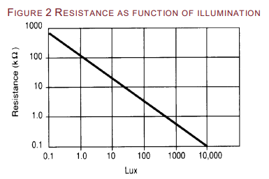
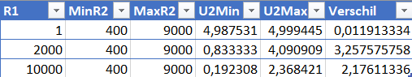

LDR: lichtmeting
Gebruik een LDR in serie met een weerstand om licht te meten, en laat de LED feller branden naarmate het donkerder wordt.
Een LDR (Light Dependent Resistor) is een weerstand waarvan de waarde afhangt van hoeveel licht erop valt. Je Arduino kan geen weerstand meten, alleen spanning, dus zet je de LDR in serie met een vaste weerstand tot een spanningsdeler. Het punt tussen de twee lees je in met analogRead(). Om de gemeten waarde daarna om te keren naar een helderheid gebruik je map() met een omgedraaid uitvoerbereik, zoals bij de vorige oefeningen.

Vragen
Bekijk eerst de datasheet van de LDR en beantwoord onderstaande vragen.
1 MOhm.
9 kOhm.
100 Ohm. Je leest dat af op de grafiek uit de datasheet:

2 kOhm. Je vertrekt van het schema van de spanningsdeler:

en van de formule van de spanningsdeler:

Vul je die formule in voor de drie mogelijkheden, met de LDR die tussen 400 Ohm en 9000 Ohm varieert, dan zie je dat 2 kOhm veruit het grootste verschil tussen de minimum- en maximumspanning oplevert:

Indienen
Sla je oefening op.
Overloop volgende checklist om je oefening zelf te evalueren:
Oplossing
De spanningsdeler levert een waarde tussen 0 en 1023. Je wil de LED
feller laten branden naarmate het donkerder wordt, dus je moet de
meting omkeren. Dat doe je door bij map() het
uitvoerbereik om te draaien: 0 wordt 255 en 1023 wordt 0.
Welke kant je op moet keren hangt af van hoe je de LDR en de vaste
weerstand aansluit. Meet gerust eerst even af wat je binnenkrijgt in
het donker en in het licht, en draai de map() om als het
de verkeerde richting uitgaat.
const int ldrPin = A0; // midden van de spanningsdeler op A0
const int ledPin = 3; // led op een PWM-pin (~)
void setup()
{
pinMode(ledPin, OUTPUT);
Serial.begin(9600);
}
void loop()
{
int licht = analogRead(ldrPin); // 0..1023, hoger = meer licht
// omgekeerd: veel licht geeft een lage helderheid, weinig licht een hoge
int helderheid = map(licht, 0, 1023, 255, 0);
analogWrite(ledPin, helderheid);
Serial.print("licht: ");
Serial.print(licht);
Serial.print(" helderheid: ");
Serial.println(helderheid);
delay(100);
}